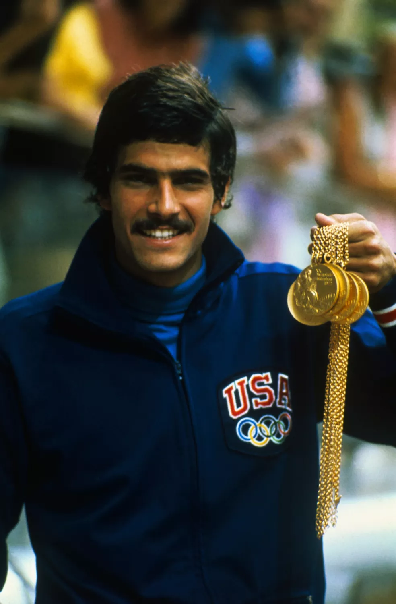
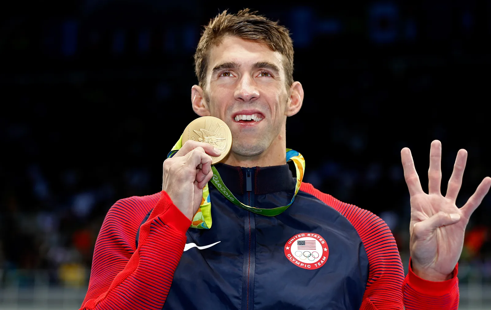

Mark Spitz, também dos Estados Unidos, tem 75 anos e foi o primeiro grande ídolo da natação olímpica. Ele conquistou sete medalhas de ouro nos Jogos de Munique em 1972, um feito inédito na época. Spitz foi fundamental para popularizar a natação no cenário esportivo internacional e abriu caminho para as gerações seguintes de nadadores de elite.
Ian Thorpe, da Austrália, tem 42 anos e é um dos maiores nomes da história da natação. Conhecido como “Thorpedo”, ele conquistou cinco medalhas de ouro olímpicas e se destacou especialmente nas provas de nado livre. Sua combinação de força, elegância e domínio técnico fez dele um ícone do esporte e uma referência na natação mundial.

Michael Phelps, dos Estados Unidos, tem 39 anos e é considerado o maior nadador da história. Com 28 medalhas olímpicas, sendo 23 de ouro, ele revolucionou a natação mundial com sua versatilidade em vários estilos e distâncias. Sua disciplina, técnica e domínio absoluto nas competições inspiraram milhões de atletas ao redor do mundo e elevaram o nível do esporte a um novo patamar.
Maria Lenk, do Brasil, foi uma das pioneiras da natação mundial. Nascida em 1915, foi a primeira sul-americana a competir em uma Olimpíada, em 1932. Ela quebrou recordes mundiais e foi a primeira mulher a usar o estilo borboleta em competições, mesmo antes de ele ser reconhecido oficialmente. Seu legado vive até hoje como símbolo de inovação e coragem no esporte.
Sarah Sjöström, da Suécia, tem 31 anos e é uma das nadadoras mais rápidas de todos os tempos. Ela foi campeã olímpica e quebrou recordes mundiais nos 50 e 100 metros borboleta, além dos 50 metros livre. Sjöström mudou os padrões da velocidade feminina e se tornou uma referência para nadadoras de todo o mundo.

Katie Ledecky, dos Estados Unidos, tem 28 anos e é considerada a maior fundista da natação feminina. Com sete medalhas de ouro olímpicas, ela domina provas de longa distância como os 800 e 1500 metros livre com tempos impressionantes. Sua consistência, dedicação e humildade a tornam um exemplo dentro e fora das piscinas.